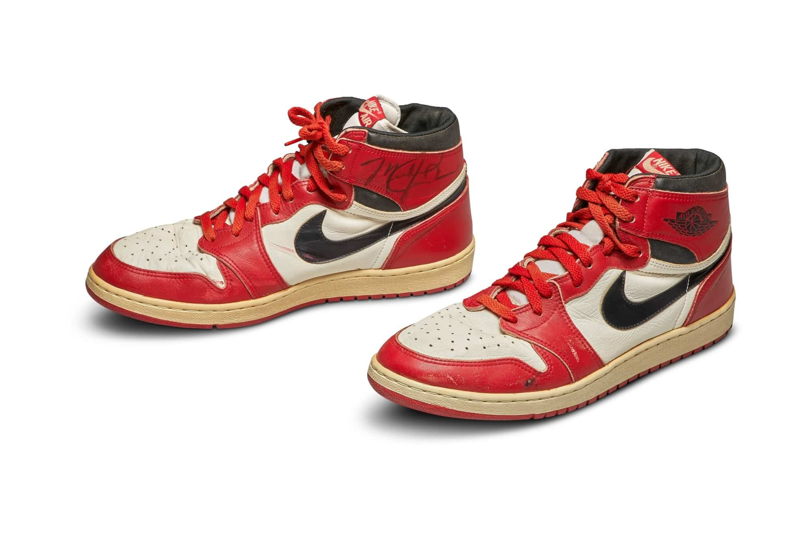
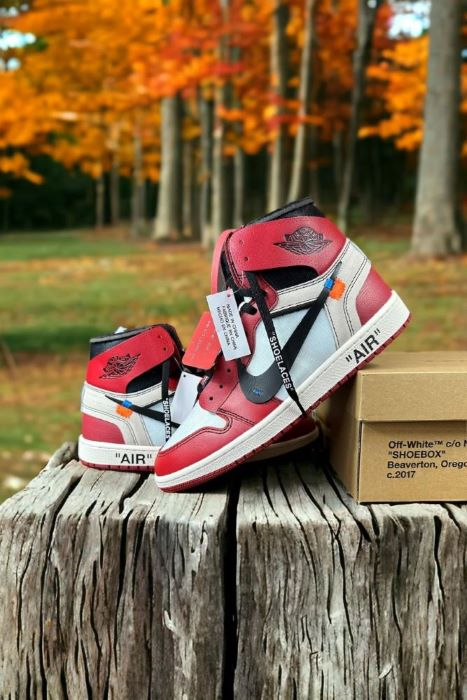
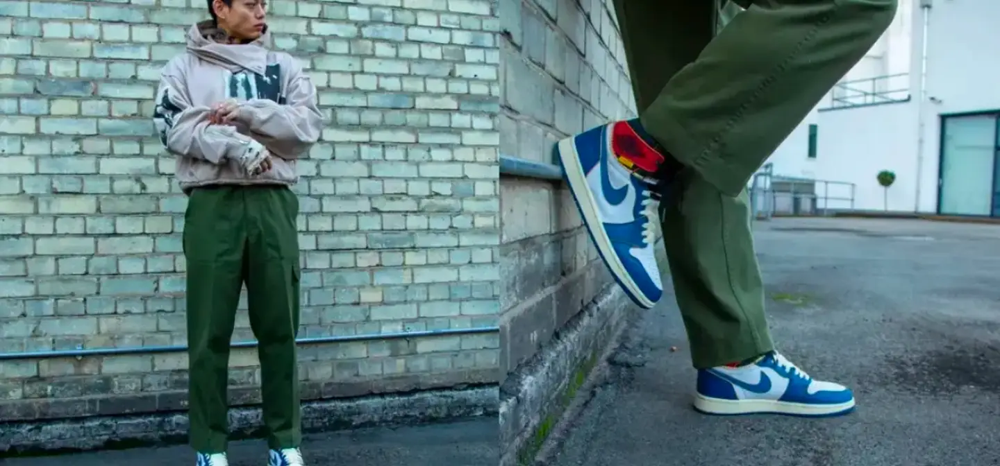

Welcome
The Beginning: Air Jordan 1
The Air Jordan brand, launched in 1984 in collaboration with NBA legend Michael Jordan, has become one of the most iconic brands in the world of sneakers and streetwear. From its early beginnings as a revolutionary basketball shoe to its influence on global fashion, the Air Jordan brand has a storied history.
Rise of the Air Jordan Legacy
In 1984, Nike signed rookie Michael Jordan to an endorsement deal, leading to the creation of the Air Jordan 1. Despite being banned by the NBA for not meeting uniform regulations, the Air Jordan 1 became a cultural phenomenon and laid the foundation for the brand's future success.
Modern Era and Global Impact
One of the key factors in the brand's continued success is its strategic partnerships with influential designers and brands. Collaborations with high-end fashion labels like Dior, Off-White (designed by the late Virgil Abloh), and Travis Scott have created limited-edition Air Jordans that merge luxury fashion with streetwear aesthetics. These collaborations have not only elevated the Air Jordan brand within the world of high fashion but also created immense demand from sneaker collectors, often driving resale prices into the thousands.
Global Reach and Sneaker Culture
The rise of the Air Jordan brand has gone hand in hand with the explosion of global sneaker culture. What started in the United States as a basketball shoe is now worn across the world, from the streets of New York to Tokyo and Paris. In countries like China, the Air Jordan brand has a massive following, with sneaker conventions, online resale platforms, and exclusive regional releases helping to fuel demand. This global appeal has made Air Jordans a status symbol not only in athletic circles but also in fashion and lifestyle contexts. The shoes have become a way to express individuality, cultural affiliation, and style.
